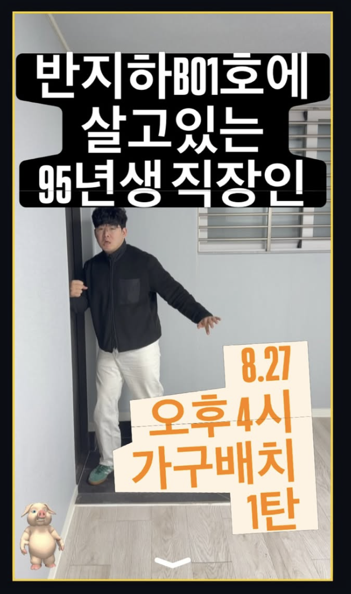

ABOUT B01 / STARTED 2026.03.20
내 것이 없어서,
시작해봤습니다.
안정적인 방을 나와, 작은 반지하에서 나의 생활을 처음부터 다시 만들고 있습니다.

01 — 시작
2026년 3월 20일, 잘 꾸며졌다고 생각했던 본가 방을 한참 둘러봤습니다. 편했고 만족스러운 방이었는데, 이상하게도 제 것은 하나도 없다는 생각이 들었습니다.
자수성가를 하고 싶다, 나의 것을 갖고 싶다, 성공하고 싶다는 말을 자주 했습니다. 그런데 월급은 들어오는 대로 정리되지 않은 소비로 사라졌고, 저는 부모님의 둥지 안에서 꽤 오래 안주하고 있었습니다.
그날 부모님께 독립하겠다고 말씀드렸습니다. “그래, 이제 갈 때가 됐다”는 말을 들었습니다. 부모님은 제육볶음, 김치, 세제, 수세미 같은 필요한 것들을 챙겨주셨습니다. 거창한 결심보다 그런 물건들이 먼저 제 손에 들어왔습니다.
“나를 브랜딩하자는 말은 너무 거창해서,
그냥 시작해봤습니다.”
02 — 살아 보니
보증금 1,000만 원에 월세 45만 원인 반지하로 들어갔습니다. 물은 기대만큼 깨끗하지 않아서 2주에 한 번 필터를 바꿔야 했고, 현관문 단차가 맞지 않아 이중걸쇠가 잠기지 않는 날에는 괜히 불안했습니다.
윗집의 쿵쿵거리는 발소리도, 새벽 배송을 다니는 사람들의 문 여닫는 소리도 선명하게 들렸습니다. 방음 패널도 사서 붙여봤지만 엄청난 효과는 없었습니다. 층간 소음은 집주인에게 말씀드린 뒤 조금 나아졌고, 새벽 소음은 어쩔 수 없는 생활의 일부로 남았습니다.
그래도 이 방에서 물건 하나를 고르고, 제자리에 놓고, 그 방법이 정말 쓸모 있는지 시간을 두고 확인하는 법을 배웠습니다.
03 — 타임라인
- 5평 반지하 B01호 입주
제육볶음, 김치, 세제, 수세미를 들고 첫 생활을 시작했다.
- 방의 조건을 기록하기 시작
물 필터, 방음 패널, 현관문 단차처럼 살면서만 알게 되는 것들을 적었다.
- B01호 기록 중
직접 사서 오래 써 본 물건과 방법만 남기고 있다.
04 — 기록하는 방식
조회수가 잘 나올 것 같은 불평이나 논란거리를 꺼내고 싶지는 않습니다. 대신 실제 치수와 실제 방법을 정확하게 남기고 싶습니다. 모르거나 확인하지 못한 것을 임의로 만들지도 않겠습니다.
틈새 신발장을 보고 “오, 이런 게 있구나? 좋네, 좁은 집에”라고 말해준 사람이 있었습니다. B01호가 그런 작은 발견을 건네는 곳이면 좋겠습니다.
05 — 앞으로의 약속